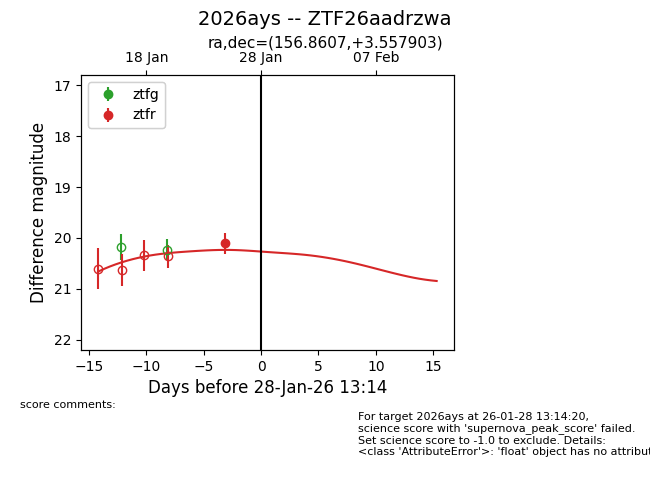
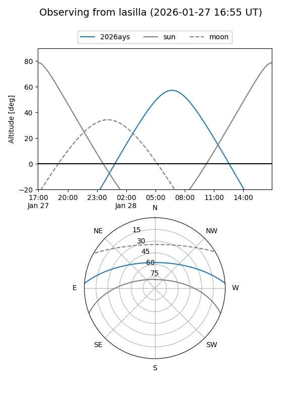
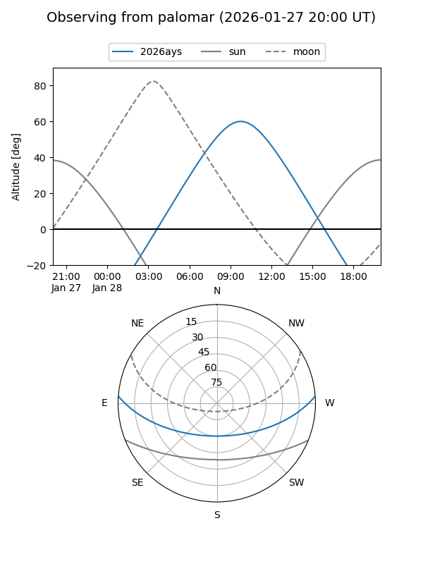
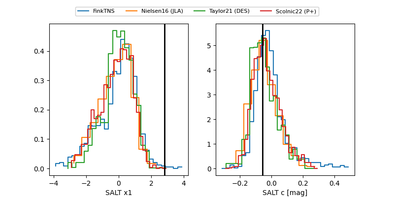

2026ays
Target 2026ays at 2026-01-25 22:41
Aliases and brokers:
FINK: link
Lasair: link
ALeRCE: link
TNS: link
YSE: link
alt names
ZTF26aadrzwa (ztf,fink_ztf)
2026ays (tns,yse)
Coordinates:
equatorial (ra, dec) = 156.8607,+3.55790
equatorial (HMS+DMS) = 10:27:26.58,+03:33:28.45
galactic (l, b) = (241.0114,+48.32568)
Flags:
Photometry:
last ztfr=20.10
1 ztfr detections
Lightcurve

Visibility


Additional plots
